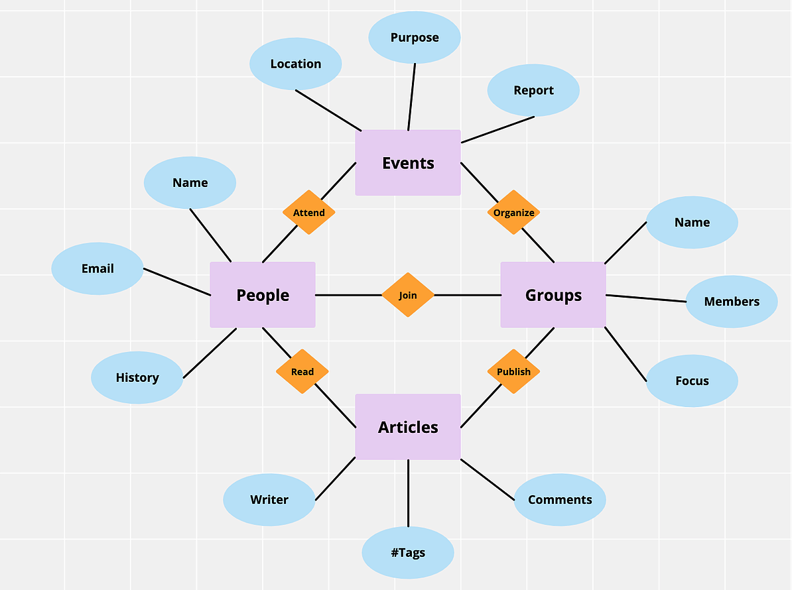

User Analysis
Our users are college students/activists who seek to educate themselves and connect with one another about social/political issues and get involved in making socio-political change, and organizations and nonprofits that can put out events.
User Interview Questions
- How do you find out about socio-political events/rallies/opportunities?
- How involved are you in these events?
- Would you like to be more involved in these events? If so, how?
- How does COVID-19 affect your participation in these events? How are you protecting yourself and others in these events?
- What remote socio-political actions would you be interested in (e.g. donation, petition, writing/calling a representative, submitting an op-ed)?
- How would you prefer to learn about events/resources (e.g. through a website, mobile app, other?)
User Interview Takeaways
After interviewing various users, we observed some trends in their responses and determined several takeaways. Most of the users were interested in becoming more involved with socio-political events and opportunities, but did not always have the time to do so. Some mentioned that COVID-19 made in-person protesting more inaccessible and risky. Although users did not feel protected enough to attend group gatherings, most of them were interested in remote opportunities. In addition, users noted that activism over social media had the following problems: “slack-tivism”, lack of separation between politics and personal life, and inaccurate information. Based on their responses, we were able to form a problem statement and start working toward a web application that could help students increase their mental and physical resilience during a time of pandemic and civil unrest.
Personas
Since our users are college students/activists, we created four personas: three students (Sarah Stanford, Wendy Wellesley, and Mark Smith) and one organization leader (William Washington).

Task Analyses
Our four task analyses were connecting with other users, creating an account, sharing an opportunity with a friend, and attending an event, which can be depicted in the hierarchical structures below.
Domain Analysis
Our domain analysis focused on four domains: events, groups, people, and articles. The connectivity of the domains with significant features and users can be depicted in the graph below.
